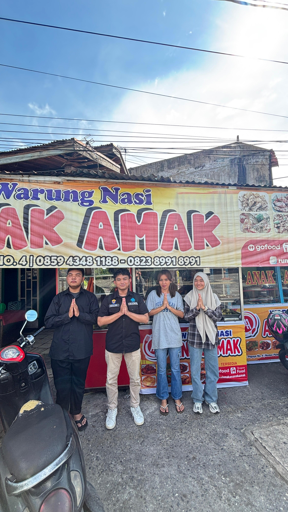
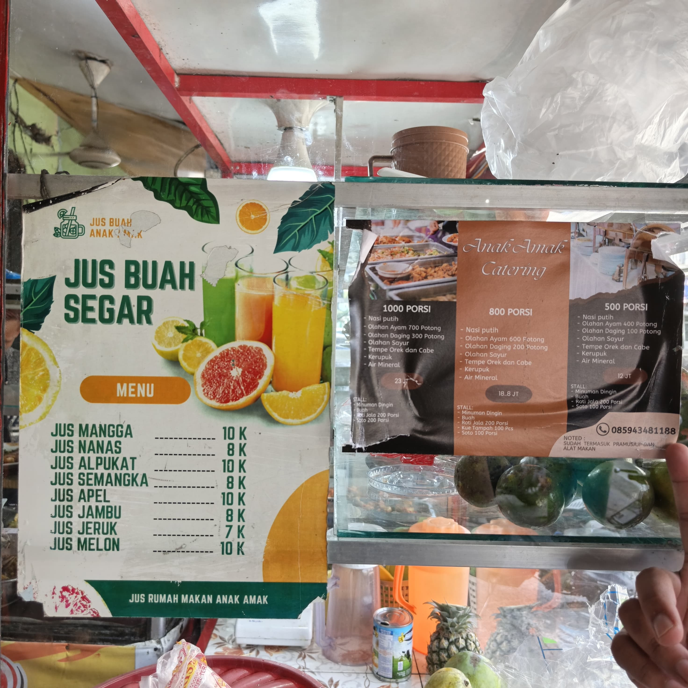
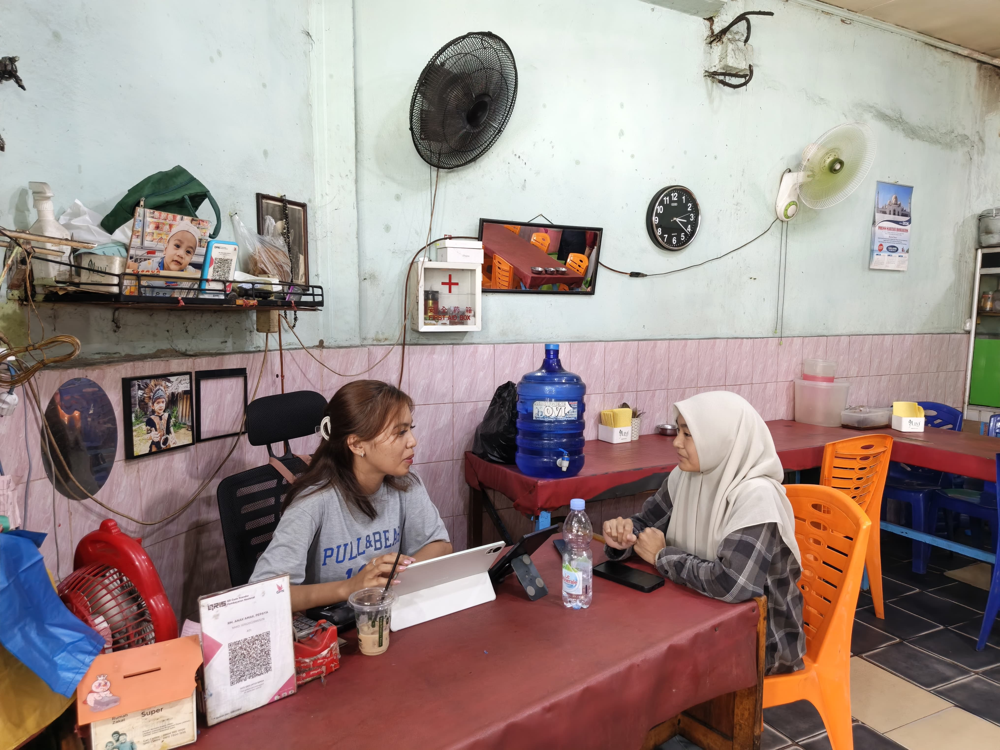
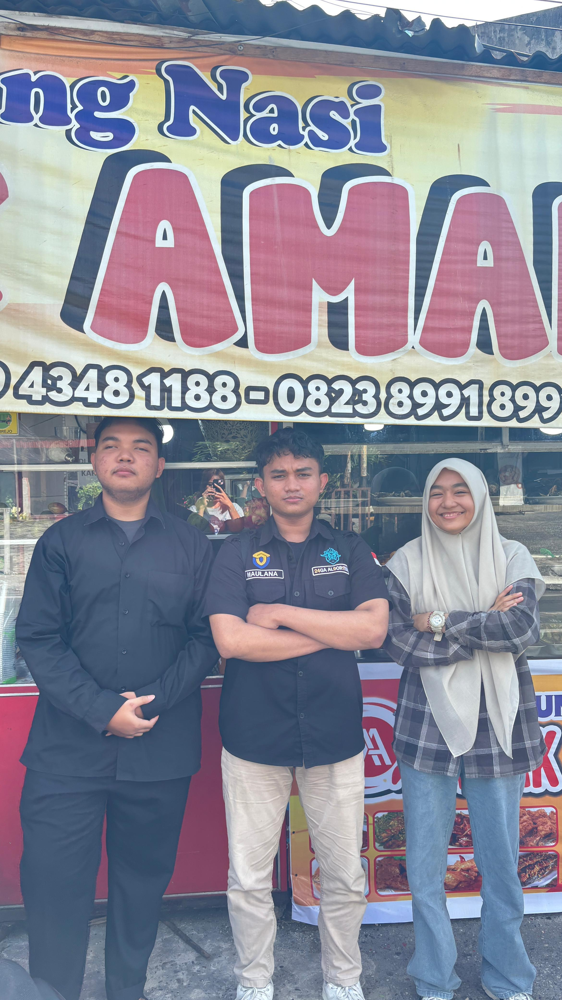

Pada tanggal 7 April 2026, Saya bersama Fadil Maulana dan Andika Wahyu melakukan wawancara di Rumah Makan Anak Amak. Ketika kami datang, suasana rumah makan sangat ramai dipenuhi oleh pelanggan fisik maupun driver ojek online (Ojol) dari berbagai aplikasi pemesanan makanan yang mengantre untuk membeli nasi dan ragam lauk yang dijual di sana.
Kami disambut dengan sangat baik oleh owner-nya, diajak untuk melihat-lihat menu andalan yang tersedia, serta dengan ramah ditawarkan untuk makan terlebih dahulu sebelum memulai sesi diskusi.
Integrasi Technopreneur
Dalam wawancara mengenai aspek Technopreneur ini, kami sangat terkesan dengan strategi adaptasi Rumah Makan Anak Amak. Rumah makan ini sukses memadukan pelayanan offline konvensional dengan ekosistem online melalui integrasi platform pesanan digital seperti Gojek (GoFood) dan ShopeeFood. Selain itu, mereka aktif mengelola akun sosial media seperti TikTok dan Instagram yang sukses menarik banyak audiens dan penonton.
"Jujur ini Rumah makan yang sangat worth it dan enak banget untuk dicoba, banyak menu yang beragam dan tentunya murah. Jangan lupa mampir ke Rumah Makan Anak Amak di Jl. Pepaya ya! 😁"
Dokumentasi Wawancara

Foto Bersama Owner RM Anak Amak

Tersedia juga jasa catering untuk berbagai acara

Sesi Tanya Jawab bersama Owner

Tim Dokumentasi Lapangan
Hubungi & Kunjungi Layanan Online
No. Pemesanan / Catering: 085943481188